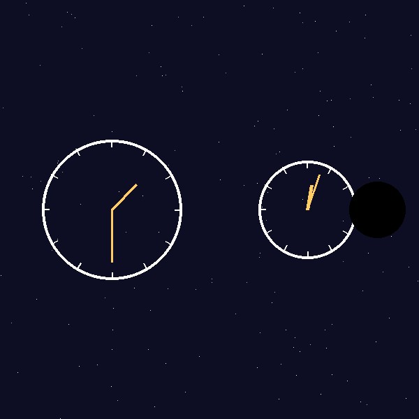

Time Slows Near a Black Hole
Near a black hole, gravity is strong enough to affect the flow of time itself. This effect, called time dilation, means a clock close to a black hole ticks more slowly than a clock far away.
This isn't just theory. Time dilation has been measured using GPS satellites, which experience gravity slightly differently than clocks on Earth's surface.

Famous Black Holes
- Sagittarius A* — center of the Milky Way
- M87* — first black hole ever photographed
- Cygnus X-1 — one of the first strong black hole candidates
Astronomers continue to search for new black holes using powerful telescopes and gravitational wave detectors.